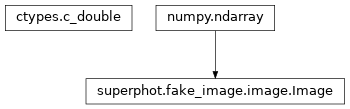

tests.test_fit_star_shape.utils module¶
Class Inheritance Diagram¶

A collection of functions used by the fit_star_shape unit tests.
-
tests.test_fit_star_shape.utils.make_image_and_source_list(sources, extra_variables, subpix_map)[source]¶ Create an image and a list of the sources in it ready for psf fitting.
Parameters: - sources –
A list of dictionaries with at least the following keywords:
- x: The x coordinate of the source center.
- y: The y coordinate of the source center.
- psf: An instance of some sub-class of PSFBase giving the sources’s PSF. It should already be scaled to the desired flux.
Additional keywords may be added to the source list and hence available as variables for PSF fitting by listing the names in the extra_variables argument.
- extra_variables – A list of additional keywords from sources to add to the source list and the order in which those should be added. The corresponding entries in sources must be floating point values.
- subpix_map – The sub-pixel map to impose on the image. For more details see same name argument of Image.add_source.
Returns: The sources added to the image. The fields give the variables defined for the sources.
Return type: numpy record array
- sources –